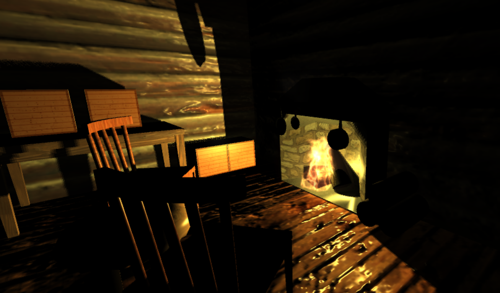
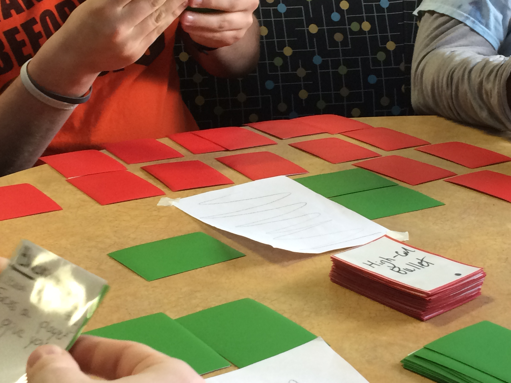
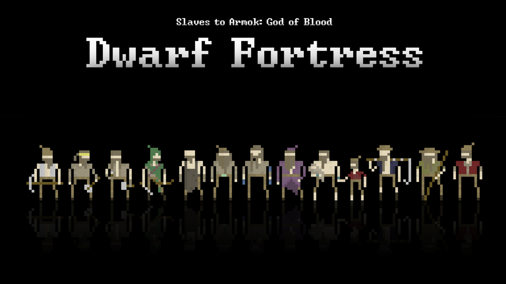
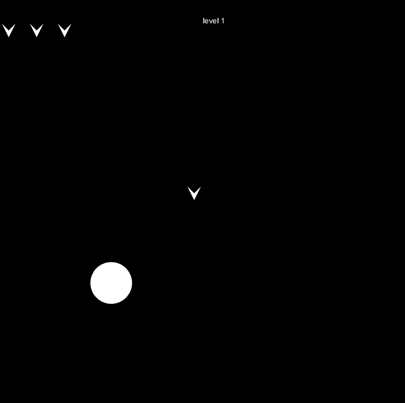

The Cabin

A Unity3D project that in which a team and I created a
fully modeled, textured, and animated log cabin.
Legion

A Unity3D project that simulates a small group of Roman
Legionnaires marching using flocking and advanced steering
algorithms.
The Gunfighter

A fast-paced, card-slinging, shoot-em-up card game with an
emphasis on quick reflexes and careful preperation.
How to play Dwarf Fortress

A website I designed with the intent of teaching users
the very complicated game of Dwarf Fortress.
Asteroids

A very simple processing application that I developed that
replicates the classic game Asteroids with my
own spin on it.